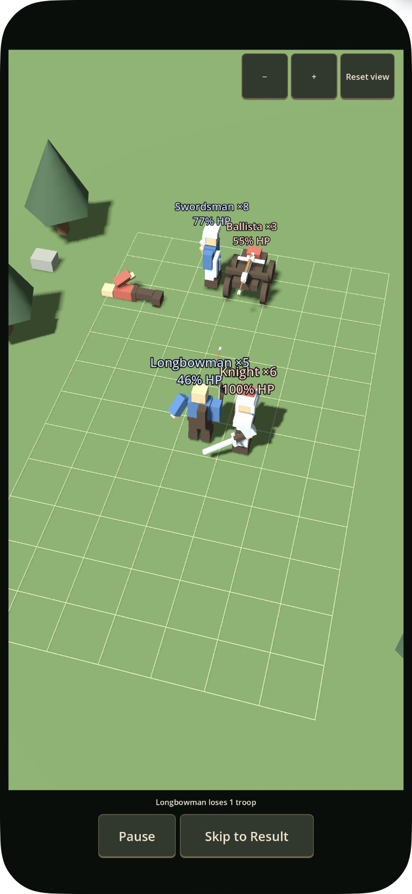

A merchant's daily wares.
Spend in-game Gold on a shared daily selection of six equipment offers, with condition and price visible before buying.
Visit the MarketplaceA new adventure from Stone & Tankard Games
Step into the world around you. Build a kingdom within it. Then discover what lies beyond its walls.



Captured from the installed iPhone development build on November 13, 2026. Art, interfaces and balance may change.
The idea
This is a kingdom-building game with two lives: the places you explore and the home you return to. Gather materials in the overworld, invest them in your castle, and prepare troops and heroes for very different adventures.
Your phone's location anchors a 3D world shaped by real geography. Discover resources and encounters in the surrounding area.
Build a castle and expand with outposts, villages and towns. Materials become buildings, holdings and a growing kingdom.
Recruit an army, research troop upgrades, browse daily equipment and assemble a separate party of heroes.
Face 3D army battles or first-person dungeons. Bring back resources, equipment and experience for the next journey.
Explore the game
The overworld, your field army and your hero party connect through the same kingdom, but each has its own pace and purpose.
Geographic exploration, painted castle grounds, daily Marketplace equipment and Menagerie companions.
02Recruitment, six-slot deployment, 3D battles, persistent enemy survivors and on-device replay footage.
03Sixteen heroes, separate XP and Rank progression, equipment, monster groups and dungeon combat footage.
A growing kingdom
Spend in-game Gold on a shared daily selection of six equipment offers, with condition and price visible before buying.
Visit the MarketplaceThe Menagerie's Lion Cub follows your ruler and contributes an army Attack bonus, without taking a hero-party slot.
Meet the companionLiving victors gain XP. Duplicate draws improve Rank. Equipment and monster loot give every return home a different possibility.
Explore hero progressionNew silent iPhone clips show an army encounter replay and sequential enemy attacks inside a hero-party dungeon.
Watch field armiesFrom the workshop
The current development build already connects location, castle management, recruitment, army encounters and hero-party dungeons. These pages describe the project as it develops, not a finished product or a release commitment.
Multi-floor dungeon difficulties, locked chests, crafting and repair, expanded spell systems and combat consumables are not yet presented as playable. Live rewarded ads are disabled; resource-ad controls visible in the Marketplace capture are developer simulations. Geography, tuning and presentation continue to evolve.
No. Location-Based Kingdom Builder describes the project while its name is undecided.
There is no public release or announced public test at this time. The screenshots come from the studio's development build.
The game is being developed and tested on iPhone. Launch platforms, supported devices and geographic coverage have not been announced. Development coverage should not be read as worldwide availability.
No. Field encounters use deployed troop stacks in top-down battles. Dungeons use a separate party of individual heroes, first-person movement and turn-based encounters.
The project uses location features, an account and online services. Its game-specific privacy information will be provided before a public release. Lights Over Harrow Farm's local-only privacy statements do not apply to this project.